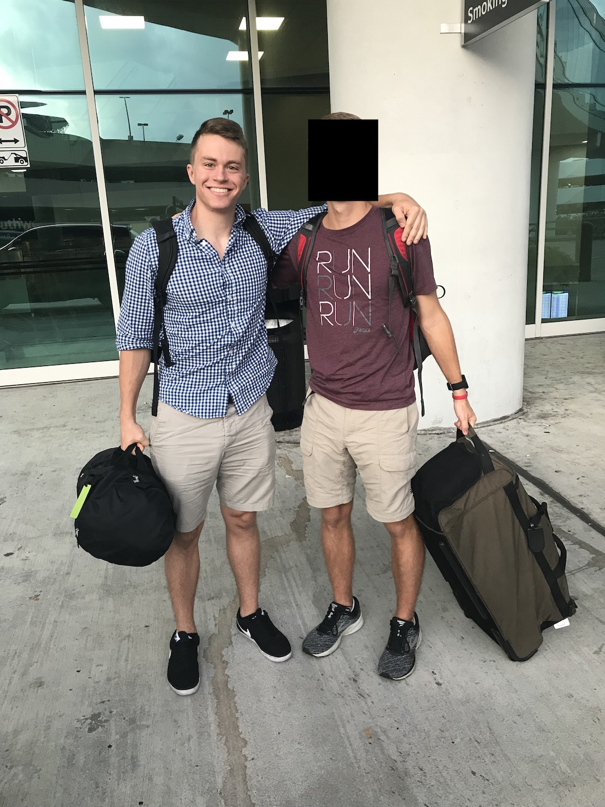
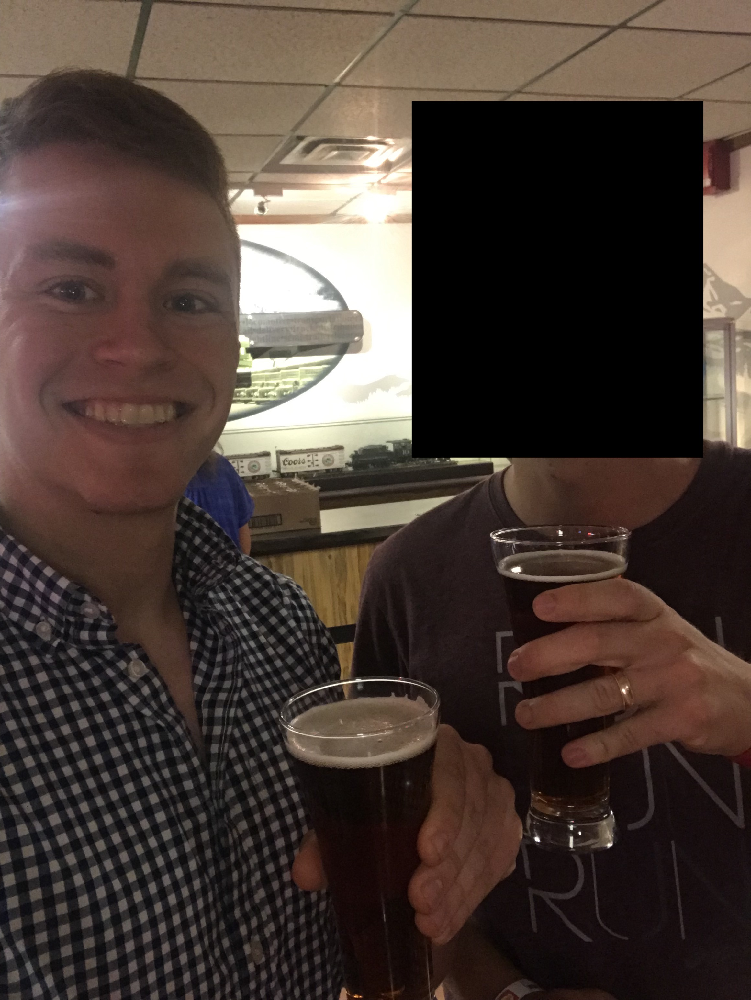
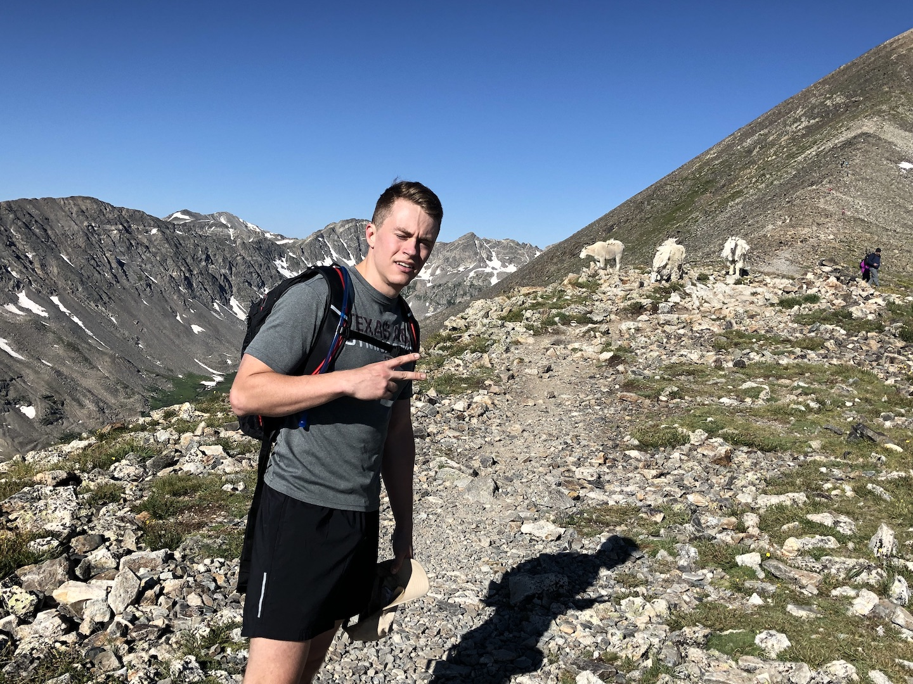
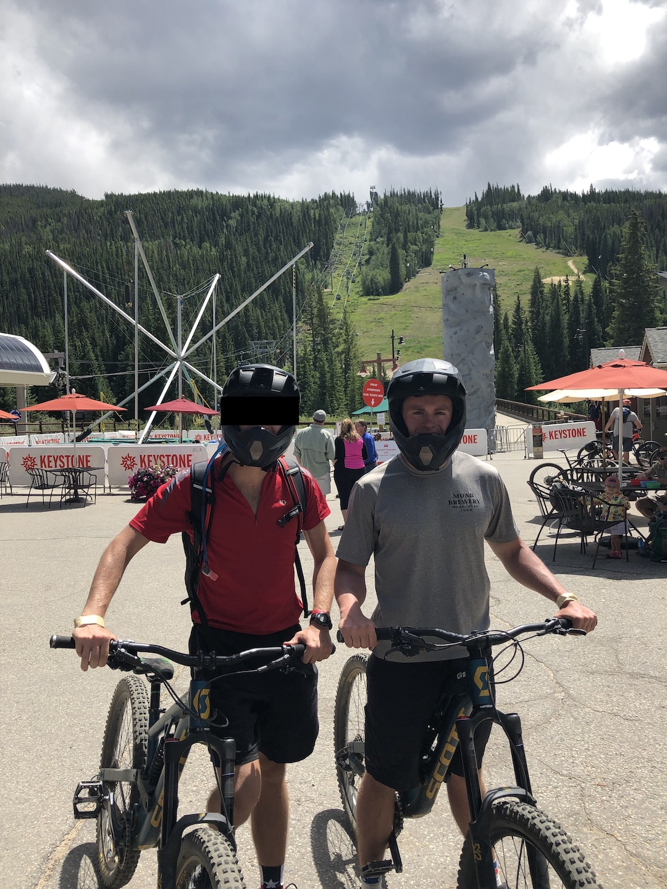
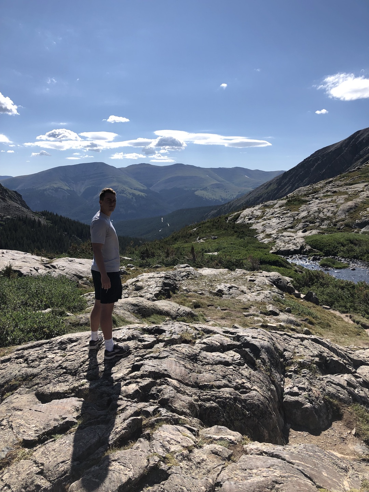

5-day trip to the Breckenridge area
Flew out of Hobby Airport early in the morning straight into Denver. Rented our car, then drove straight to Golden Colorado for lunch. We ate at Woody's Wood Fired Pizza, where they have a gourmet pizza buffet (and salad, but who eats salad when pizza is available?) for around $15. And, if they don't have the pizza you want available, you can just ask them to make it - for free. Highly recommend this restaurant if you are ever in the area.
After a filling lunch, we headed over to the Coors factory for their Coors Brewery Tour. $10 for a self-guided tour, three 8-oz Coors beers, and a commemorative glass. I only had two: Killian's Red (per my father's request) and Banquet (per the elevator operator's raving review: we asked her what her favorite beer was and she said "Banquet" before we even finished asking).
Headed straight to Breckenridge via I-70 with windows down and music playing. Definitely not a Texas thing this time of year! Once we got to our Airbnb, we unpacked and organized, then headed to the store for groceries. Ate out at Empire Burger, where I got the hyped-up Impossible Burger and their Carpe Dia margarita.
Quandary Peak was the first item on our Day 2 itinerary. A 6.7 mile out-and-back trail with 3300+ ft elevation gain, this was much more difficult than anticipated, at least the uphill. The trail up is about 90% uphill, with the other 10% being flat. It starts out going through a nice wooded area with some nice views of the valley. Once we got past the tree line, the hike got significantly more difficult. The uphills were not smooth, but rather a series of tall steps, so it was akin to climbing steep stairs that are about a foot tall. Remember this is all at 10,000+ ft, where Texas is essentially sea-level!
It took us 1:45:00 to get to the top, with minimal water breaks and stopping to watch the mountain goats do goat things. The peak was very cold with a blistering wind. We took cover on one side of the peak behind rocks and snacked on trail mix and water. After perfecting some pictures, we began the descent. Much easier than going up, but still killer on the knees. We did run out of water at the top, though!
After we got to the bottom, we headed to the Blue Lakes for what we thought was going to be a refreshing dip. Water turned out to be too cold, so Brother soaked his calves for a few minutes while I sunbathed.
We learned later that 4:00:00 is quite fast for the trail, evident by our passing of everyone and lack of being passed by anyone. Go exercise!
After getting back to the apartment and not having any concrete plans, I decided to head over to the Breckenridge Resort/Bike Park to do some downhill runs. My first run was down the black diamond Dwight's, which was fun. Technical and rocky. My second (and what I didn't think would be my last) was down Frosty's Challenge on the far side of the mountain. I missed a turn (like I did way back during the Morse's 2014 Breckenridge trip!) and was shot out at the bottom of the hill leading up to the resort one mile away. After pedaling 3/4 of the way up, I called it a day. My legs were dead from the hiking and weather radar had a small thunderstorm coming in. I called Brother and he rescued me at the bike shop in town.
Dinner was at Sancho Tacos and Tequila. I had the Duck Confit and Ensenada Fish tacos and we shared chips and a selection of three of their well-known salsas. Walked around downtown for a bit before heading back to the apartment.
Headed over to Keystone Resort/Bike Park for a half-day of downhill riding. Got our beefy freeride bikes and (strongly recommended by the staff) full-shell helmets and headed up the lift. Trail map here for reference.
First run was done the main green line: Girl Scouts, Suz's Cruise, and Let it Ride. Nice flow, berms, and some small jumps. More advanced riders could definitely have fun on this.
On the second run, I forced Brother down a blue since he'd had his warm up lap in, so we took Eye of the Tiger into Mosquito Coast. A bit more advanced than the description led us to believe, but no biggie. Brother made it all the way down without walking (nice!) and I had a blast dropping off some rocks and going down some steep tech. We then took the service road Jaybird to Paid in Full, where Brother split off to ride Boy Scouts. Paid in Full was awesome, and led to Even Flow. This was one of the steepest, most technical trails I've ridden, and I had to walk a middle section. Trails being dry didn't help traction much. Nice skinnies!
On the third run, I decided I wanted to venture off by myself to explore some of the more advanced trails, so I chose Cowboy Up to Holy Diver to TNT to the upper half of Paid in Full. While the tech wasn't too advanced for me, my jumping skills are nonexistent, so I had to skip a few features. After waiting for Brother for a few minutes, I kept on with Paid in Full, but opted for Wild Thing, which was equally as technical as Even Flow.
Fourth run was solo, as Brother's hands were destroyed. I took some different blacks this time: Milky Way to High Speed Dirt to Jam Rock. Jam Rock had the sketchiest rock face I've ever seen. Wasn't able to see anyone ride it, though. Took Sanitarium as my final trail. Decided not to ride the corkscrew bridge, but in hindsight, I should've. Worst-case scenario I fall off and break a few bones and pay thousands of dollars in medical bills. As the saying goes: pain is temporary, regret is forever. This was all my body could handle. My arms were weak, hands hurt, and head throbbing from the constant jarring my head was doing. No crashes or spills and was able to ride all of the trails I wanted, so a successful adventure!
We called it a day (with 10 minutes to spare on our rental, so we got our money's worth) and headed to Dillon for a sub at Cheba Hut. Brother got the Grape Ape: jalapeño cream cheese, meatballs, grape jelly, pineapple, red onion and barbecue sauce, topped with cheddar cheese, bacon, parmesan and oregano. How did they come up with this, you ask? Must've been after that they passed Colorado Amendment 64 and some guy had a marijuana-induced epiphany about a new type of sandwich. As the cashier said, "it just works, man."
Headed to Dillon Lake for another hopeful dip, but got our plans foiled yet again by a cloud-covered sun and freezing water. Headed back for a homemade dinner and walking and shopping around the town.
Headed to the McCullough Gulch Trail, which is a few miles past the now-infamous Quandary Peak trailhead. 6.2 miles out-and-back with an extra lake option and 1500 ft elevation gain (this number didn't seem correct while we were climbing!). This trail looked extremely similar to the Stuart Fork Trail to Emerald and Sapphire Lakes: the valleys, the lakes themselves, and the scenery between each. This brought on an intense nostalgia, enough so that I'll have to make a trip back to the Trinity Alps at some point.
After making it to the first lake and talking to another hiker about the mysterious second lake, I successfully convinced Brother to make the trek. (See my pain-regret quote from earlier.) After trudging through some brush that could have used a machete haircut, we crested the what we thought was the final hill to be met with a lush meadow. After another 10 minutes, we crested the final-final hill and got our reward for the extra 45 minutes trek: a smaller, quiet lake tucked in between a hill and valley walls. There was actually a third lake over another hill (see picture below), so it was even similar to the Emerald-Sapphire-Mirror trifecta in that regard. The hike back was a bit more eventful: we spoke to other hikers about their CBD business, found a woman's driver's license (more on this later), and had lively discussions on parenting and U.S. policy decisions.
Back at the apartment, I was able to use my Facebook-fu to track down the ID's owner. We were able to get it back to her an hour later to many thanks and astonishment at my sleuthing skills. We headed back to Keystone Resort for a free music festival, where Jared and the Mill (saw them at SXSW earlier this year) and other bands were playing. Dinner consisted of a New Belgium Sour Peach beer, pulled pork slider with peach chutney, and a waffle/peach/bourbon ice cream concoction. All delicious, except for the ice cream (whiskey and its derivatives make me sick - leave ice cream alone, alcohol industry!). Left around 8:00pm for a dark drive home.
Woke up around 8:00am and began packing and cleaning while Brother ran. We were able to leave the Airbnb for Denver around 9:30am. Had a delicious lunch at the Denver airport (thanks to Brother's Chase Sapphire card) before boarding the plane. Uneventful flight and Megabus ride home.